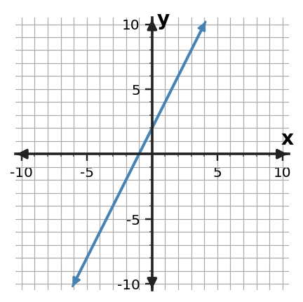
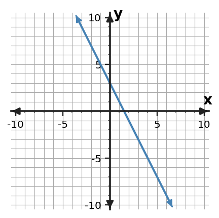

Classroom Copy 1
Station 5 • Set 2
Write an equation for the line shown.

Use the graph to determine the output when $x=2$.

State the y-intercept as an ordered pair.

Determine whether $(2,-1)$ belongs to the relationship and explain using the graph.
